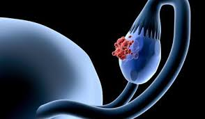
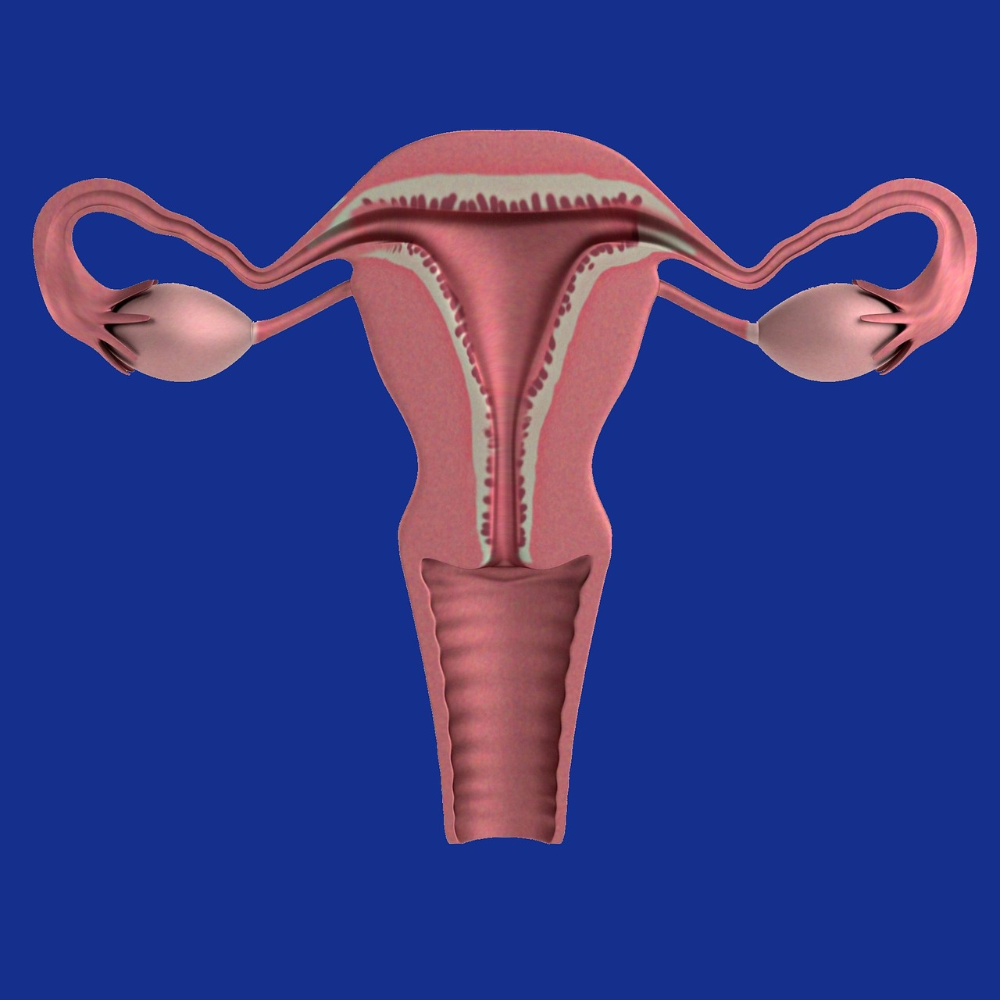
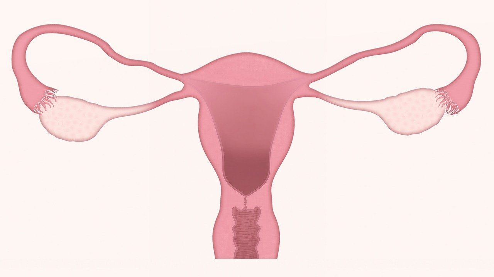

Les femmes doivent faire face à de nombreuses inégalités depuis leur adolescentes mais aussi pendant leur grossesse ce qui entraine de forte conséquences. La dernière étape chnologiquement dans la vie d'une femme c'est l'apparition des maladies à un âge avancé de la femme.
Cancer de l'ovaire
Le cancer des ovaires touche de plus en plus de femmes chaque année. Selon le Dictionnaire Le Robert, l’ovaire est une “glande génitale femelle qui produit l'ovule et les hormones sexuelles”.
Le cancer de l’ovaire est un cancer qui à un taux de survie très faible par rapport à celui du cancer du sein ( 30% contre 75%). Un des grands problèmes c’est que ce cancer c’est qu’il n’existe pas de test précis pour trouver un cancer ovarien. Cela explique un taux de survie très faible car les femmes touchées ont les trois stades de ce cancer ce qui diminue les chances de survies. Cependant ça reste un cancer plus rare. On compte environ 4 000 nouveaux en France chaque année contre 50 000 cas français pour le cancer du sein.
Définition: Le cancer de l'ovaire s’est une masse de cellules qui se multiplient sur le tissu sain. La plupart du temps, une femme a un cancer de l’ovaire pour des raisons génétiques mais aussi pour des causes hormonales et reproductives. Pour traiter ce cancer, une chirurgie est recommandée. Elle consiste à enlever l’utérus, les deux ovaires ce qui signifie que la femme ne peut plus avoir d’enfants.

On remarque sur cette carte que le pays le plus touché par ce cancer est les Etats-Unis. Le nombre de cas dû à ce cancer le plus élevé est 14 858 en 2006 aux Etats-Unis. Nous n’avons pas de données pour les pays africains. On peut faire une hypothèse car ce cancer touche des femmes entre 60/70 ans. Cependant l’espérance de vie des femmes en Afrique est de 37.5 ans environ pour les personnes nées entre 1950/1955. On peut supposer que les africaines sont faiblement touchées car elles ne survivent pas jusqu’à l’âge où le cancer peut se déclarer. Mais il faut noter que l’espérance de vie des africaines augmentent on estime 60.2 ans pour les personnes nées entre 2010/2015 donc à voir si on pourra trouver des données vers 2070 pour le cancer de l’ovaire en Afrique et regarder si il y a des régions plus touchées que d’autres car l’espérance n’est pas la même entre l’Afrique du Sud et l’Afrique de l’Ouest.

Cancer du col de l'utérus
L’utérus est un organe situé entre la vessie et le rectum, destiné à contenir l'embryon, c’est un organe féminin. Le cancer du col de l'utérus est causé par une infection transmissible sexuellement (ITS) dont l'origine est le virus du papillome humain (VPH).C’est un cancer pas trés rependu, il est le douzième cancer en matière de fréquence chez la femme en France.
La chirurgie est utilisée dans différents contextes pour traiter un cancer du col de l'utérus. ( l'ablation chirurgicale partielle du col de l'utérus mais il y est possible d'utiliser des moyens thérapeutiques moins agressifs comme le traitement par laser ou par le froid).
Définition: Le cancer du col de l’utérus prend son origine dans les cellules du col de l’utérus. Ce dernier est constitué de deux parties : l’endocol (en direction de l’utérus) et l’exocol (en direction du vagin). Le cancer du col de l'utérus peut apparaître à tout âge, à partir de 25-30 ans. Dans la plupart des cas, il est lié à une infection virale.Mais il peut se développer à cause de différentes raisons comme le tabac, un important nombre de partenaires.

Le cancer de col de l'utérus touche très fortement les Etats Unis. Environ 4 000 cas chaque année. On n'a pas de donné pour les pays africains et les pays en voie de développement. Cependant la vidéo en dessous montre bien qu'une sensibilisation est faite pour le cancer de l'utérus afin de prévenir les femmes africaines.
Dans cette deuxième vidéo, nous avons le témoignage d'une femme qui a survécu au cancer du col de l'utérus. Elle appelle à sensibiliser et à faire vaciner le plus possible de femmes. Le Rwanda a vaciné de nombreuses femmes face au VPH. Cependant ce n'est pas le cas dans tous le continent africain en raisons des chefs religieux. Le Kenya a eu du mal à le mettre en place mais il devient le 16 ème pays africain à introduire le vaccin aux écolières de 10 ans. De plus les pays africains mettent en place des dépistages gratuits pour les femmes.
Cancer du sein chez la femme
Le cancer du sein est le premier cancer qui touche les femmes. Il est souvent jugé comme un cancer féminin cependant on compte environ 500 cas masculin en France chaque année.
Définition: Le cancer du sein est la présence de cellules anormales qui se multiplent. Le sein est composé de graisse, de glande et de canaux. C'est le cancer le plus diagnostiqué dans le monde. Une femme sur 9 sera touchée par un cancer du sein et 1 sur 27 en mourra. Il existe plusieurs cancer du sein soit il est non invasifs soit il est invasif ou inflitrant.
Le cancer du sein touche beaucoup les pays développés. En 2015, aux Etats-Unis il y a 41 525 femmes touchées par le cancer du sein, 18 136 pour l'Allemagne, 13 584 pour le Japon. En France on compte 12 233 cas du cancer du sein.
Nombre de décès du cancer du sein aux Etats Unis
Cette carte montre les décès du cancer du sein chez la femme. On voit une relation plus il y de femmes dans l'état plus il y a de morts du cancer.
Par exemple: En 2017, en Californie, il y a eu 4 588 décès pour 19 817 679 femmes dans l'état. Contre 130 décés dans le Montana avec une population féminine de 522 925.